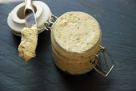

Sardine Butter

Description
A different butter to differ the daily sandwichs, with
a lovable strong seafood flavor and a perfect texture.
Ingredients
- 10 tablespoons of salted butter
- 1 can of sardines
- juice of 1/2 lemon
- 1 tablespoon of minced chives
- ground black pepper
Steps
- Place the butter in a bowl with the drained sardines.
Use a fork to smash them together.
- Add the lemon juice after a minute. Mash until
incorporating everything. Add the chives and black
pepper last thing.
- Roll the butter in plastic and refrigerate for an hour
- Serve it with toast and have fun!
Reference:
Food52
Home